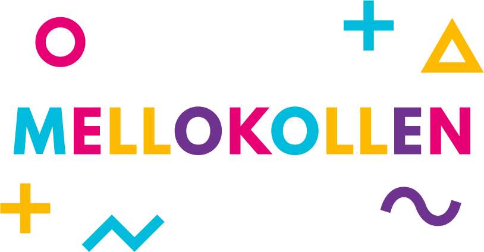
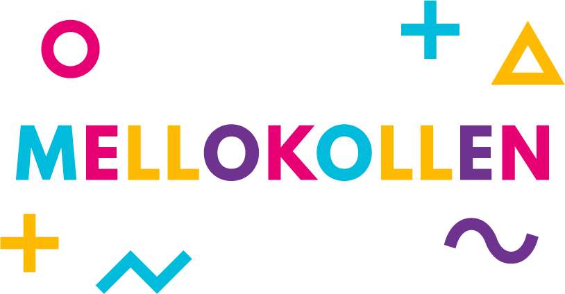

En nördig djupdykning i datan bakom Melodifestivalen.
Nytt avsnitt varje vecka fram till finalen.
TEXTERNA
Vad sjunger de egentligen om?
Du kanske redan har gissat det. I ett enda ord: kärlek. Inget annat ämne är så populärt i Melodifestivalen som att sjunga om någon eller något man verkligen älskar. Oavsett om det handlar om bitterljuva minnen, kärleken till förlorade bröder eller helt enkelt rå passion. Bara för att ta några exempel. Och exempel finns det gott om - mer än 80% av låtarna i Melodifestivalen innehåller ord om kärlek.
Vi var nyfikna på vad Mello-artisterna sjunger om egentligen. Vilka ämnen, och hur mycket? Är låtarna glada eller ledsna? Så vi analyserade låttexterna från de senaste 13 årens Melodifestivaler i jakt på kärlek, glädje och sorg. Det här är vad vi hittade.
Så räknade vi
Hur avgör man vad en låt handlar om? Hur mycket får man tolka? För att få en bra uppfattning om vad artisterna i Melodifestivalen sjunger om gjorde vi först en översiktlig karta över de ämnen som vanligtvis brukar förekomma i låttexter, t.ex. kärlek, längtan/äventyr, tidsangivelser, religion, familj och många andra. Sedan skapade vi en ordlista med ord relaterade till varje ämne och räknade ut hur många ord av varje slag som förekom i Mellolåtarna. Inte helt förvånande vann kärlek helt överlägset. Mer än 80% av alla bidrag till Mello handlar om kärlek - och då har vi ändå inte lyckats fånga upp de låtar som bara använder metaforer för att beskriva kärlek. De låtar som hade få (1-3) kärleksord har vi klassat som "lite kärlek", och de som hade fler kärleksord som "mycket kärlek".
Förr i tiden var alla låtar i Mello tvungna att vara på svenska, men de reglerna togs bort för länge sedan. Sedan dess har vi fått höra låtar på svenska och engelska, men även serbokroatiska, spanska och flera andra språk.
De vanligaste kärleksorden är numera på engelska. Vanligast är olika varianter av "love", vilket kanske inte är så konstigt med tanke på att de svenska orden "älska", "kärlek" och "kär" alla översätts med "love" eller "in love" på engelska. På andra plats kommer "baby", ett ord som till vår förvåning enbart förekommer i kärlekslåtar. Några sånger om nyfödda barn tycks inte ha varit med i Mello, åtminstone inte de senaste femton åren. Det vanligaste svenska ordet, "kärlek", kommer först på fjärde plats. Och då är tredjepristagaren, "heart", ändå nästan tre gånger så vanligt.
För att avgöra vilka låtar som är "peppigast" och "deppigast" har vi gjort en så kallad sentimentanalys på låttexterna. Alla ord i texten får en poäng baserad på om ordet ofta förekommer i glada eller ledsna sammanhang. Detta är ofta en mycket effektiv metod, men kan ibland leda till en del överraskande resultat. Efter solsken av Panetoz är verkligen inte någon deppig låt, men är ändå den låt som har den "ledsnaste" texten enligt vår modell.
Det samlade låtmaterialet i vår undersökning består av 391 av totalt 416 låtar mellan åren 2002 och 2014. Till 25 av låtarna har vi inte kunnat hitta någon text och de ingår därför inte i analysen.
[DELA]
LÅTARNA
2015-02-13 08:00
LÅTSKRIVARNA
2015-02-20 08:00
ARTISTARNA
2015-02-27 08:00
???
2015-03-06 08:00
VINNARNA
2015-03-13 08:00